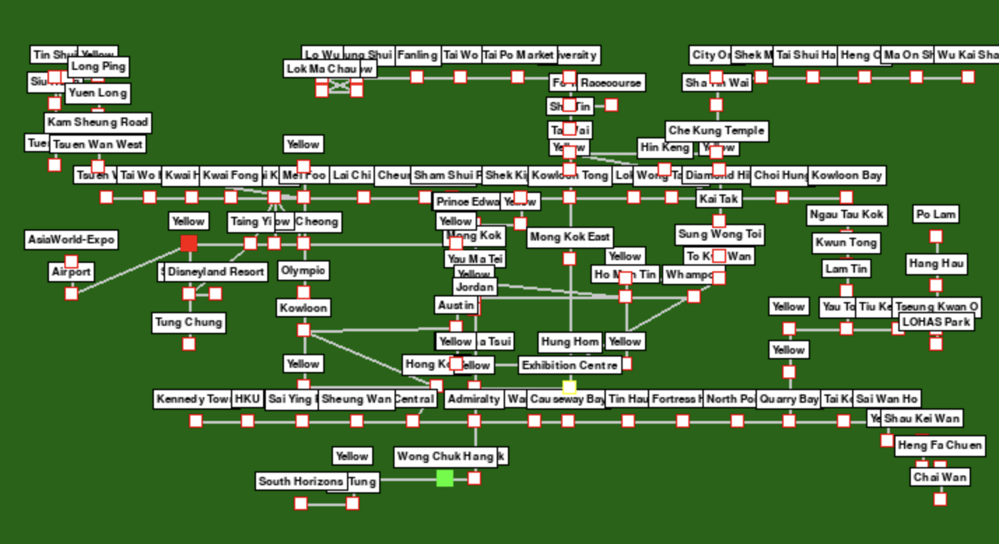

小熊諾樂GO！香港版早期開發階段。
Vibe Coding 一個香港夢：
與 AI 共建小熊諾樂GO！
由EntzYeung於2025年3月26日發布
從想像到行動：AI送我一對翼
我是數據科學家和AI工程師。我用Python編碼都超過10年了，主要從事數據科學、機器學習工程和AI工程。Pygame？我聽過，玩過幾次基本的Programming，但從未敢夢想打造一個完整的遊戲。門檻太高了。我不擔心學習這套語言，我擔心的是必須投入的大量時間去完成一隻game。
我想創造一些有趣的東西，令香港人產生共鳴 — 就好似能像給年輕一代留下一些遺產，希望佢哋唔會忘記美好嘅香港。但我的想像力超出了我的技能。如果要自己一個人去做地圖佈局、動畫、遊戲邏輯、遊戲編碼 — 就好似是在沒有裝備的情況下攀登一座山一樣困難！
我本身訂閱了多個 AI 服務。我嘅感覺係，如果你在某個領域已有基礎，甚至乎是專業知識，AI是非常有幫助，能大大提升效率。但如果你在某個領域完全是新手，AI 就幫不上太多忙。直到有了 Grok 3（最近聽到 Gemini 2.5 Pro 的好評，我都很想試試）。有了 Grok 3 作為我的副駕駛，vibe coding都形成改變了一切。突然間，我不再只是幻想《小熊諾樂GO！香港版》 — 我我真的可以自己建造它。只是四周的時間，不是幾年，我就有了可用的原型：玩家能擲骰子，在地鐵站之間走動來回，購買物業，躲避颱風等季節性事件。冇錯，這個遊戲很像桃太郎電鐵，因為我自己本身是他的fans，在中學的時候，已很想有一個香港的版本。
如果沒有 AI，我還是在盯著空白的 IDE，感到老鼠拉龜一樣根本無所適從。有了AI，我完成了我從未想過能做到的事情。正如某位開發者所說（抱歉我忘了是誰在哪裡說的）：「AI 把程序員變成了巫師 — 指一指，許個願，就能看到魔法發生。」這正是我的感覺。
半人半機械：共同合作的力量！
Grok 3 很出色，但它暫時還是無法取代人類的創造力。這個項目我會說我和AI的工作分成大約是 50/50。我帶來了願景、計劃、測試、調試和解決方法等；Grok 負責生成大量通用代碼。你可以。把它想像成終極編碼助手 — 我只需說：「嘿，給我做一個帶 3D 按鈕的HUD」，70% 的時間它就能完美呈現我腦中的畫面。另外 30% 呢？嗯，AI 會犯錯。它會幻想語法，誤解意圖，或者生成看起來完美但崩潰得很厲害的代碼。這時我就得介入（其實長期都需要介入，哈！）比如當火車傳送到地圖以外的地方，我們需要引導 Grok 回到正軌。
AI 不僅幫我視覺化我的思維導圖，還讓我的夢想成真。上圖是我經過一天手動整理後的遊戲棋盤。
我啟動這個項目的另一大原因是想看看 vibe coding 究竟能帶我走多遠。在早期概念驗證 (POC) 階段，Grok 3 讓我驚嘆 — 它幾乎能一次就實現我想的東西。（我稍後會在我的 repo 中分享《小熊諾樂GO！》的文本版 POC。）這一點就讓我震驚。但真正的考驗是轉向 2D 遊戲棋盤版本時開始的。情況就很像，你被美女吸引了之後拍拖，但是拍拖後發現他的性格有點難⋯⋯
Grok 3 無法克服的一個巨大障礙是將車站的 x 和 y 坐標映射到 2D 地圖上。給他一個分辨率很高的簡單地圖之後，我的第一個提示很簡單：「給我一個簡化地圖上車站的大約 x 和 y 坐標。」但是它失敗了。於是我不斷反覆調整 — 每次都會給 Grok 更多的細節：譬如車站名稱、大概的位置、它們之間的關係，甚至把地圖縮小到只有一小部分。儘管如此，Grok 3 還是無法給出合理的車站位置列表。
最後，我只好自己手動繪製了地圖 — 這項任務花了幾天到大約一星期的時間完成。之後，我的地圖看起來還是有一點亂。於是我再次求助 Grok：「你能整理一下嗎？如果車站大致在直線上，就把它們整齊排列。」即使多次優化提示，Grok 還是沒能搞定。車站仍然歪歪扭扭的。
AI 能取代人類嗎？也許能，但一兩年內我覺得絕對不行。它暫時還只是一個工具，不是大腦。我提出一個想法 — 比如為車站設計問答系統 — Grok 會給出一個不錯的草案。但當玩家的現金變成負數，遊戲沒能正確處理債務時，我得親自測試，實時調整邏輯。AI 無法「感覺」遊戲流程；它抓不到只有人類玩遊戲時才能發現的細微錯誤。Hossein Mohammadi 先生也說過類似的話：他的 LinkedIn 帖子稱 AI 是一個「從不睡覺、工作快如閃電、偶爾犯下搞笑錯誤的天才實習生」。
平衡的藝術：AI 的問題
說到遊戲流程，平衡是 AI 另一個掙扎的領域 — 這不是它的錯。平衡是主觀的，與人類的情感和感覺相關。譬如到達目的地應該獎勵 $500 還是 $1000？季節性事件應該觸發的頻率是 10% 還是 20%？我請 Grok 調整這些，但它的建議要麼太機械（固定百分比），要麼離譜（$10,000 的獎金打破了遊戲內的平衡）。即使在人類之間，平衡也爭論不休 — 看看任何遊戲論壇，玩家都在爭論什麼「感覺對」。至於《小熊諾樂GO！》，我最終還是自己調整了事件、概率和獎勵，一輪又一輪地玩，直到找到既具挑戰又有趣的甜蜜點。AI 還無法品嚐那種魔法。
索引繁重問題：人類的觸感
還有的就是「索引繁重的工作」 — AI大致上都不能勝任涉及複雜結構化數據的任務，儘管模式是很明顯和簡單的。以 stations.py 中的 map_layout 為例。每個車站是一個nested dict（data的一種種類），包含 "name"、"x"、"y"、"connections" 和 "assets" 等鍵。這是一個片段：
map_layout = {
0: {"name": "香港", "line": "TCL", "connections": [25, 108], "x": 3516, "y": 3063, "type": "city", "assets": [...]},
1: {"name": "九龍", "line": "TCL", "connections": [2, 104, 106], "x": 2752, "y": 3063, "type": "city", "assets": [...]},
2: {"name": "奧運", "line": "TCL", "connections": [1, 3], "x": 2952, "y": 3063, "type": "city", "assets": [...]},
...
}
我想讓車站對齊 — 比如將「香港」、「九龍」和「奧運」在水平線上均勻間隔。我告訴 Grok：「這三個在東涌線上，將它們的 x 坐標在 2752 到 3516 之間均勻分布，保持 y 一致。」很簡單，對吧？不。Grok 要麼算錯間距，要麼忽略 y 對齊，要麼搞亂車站 ID。超過 100 個車站，錯誤迅速累積 — 坐標重疊，連接斷裂，地圖看起來像幼兒塗鴉。
為什麼？像 Grok 這樣的 LLM 一般從「模式」中學習 — 例如文本、語法、邏輯流程。但正正是因為這項任務太依賴「模式」；這項任務是空間和關係性的，有數百個重疊和相似的值。當我叫AI驗證連接（例如確保「香港」連接到「中環」）時，它會漏掉一半檢查，或無法分辨新舊索引。我最終只好全手動完成 — 自己重新連接和對齊車站，驗證每個鏈接。對於少量條目，AI 或許能應付，但擴展到 10 個以上的數據時，就亂來了。請不要誤會，這不是對 Grok 的批評 — 我還是超喜歡它，只是LLM先天是不擅長這種工作。
統計數據
我在 3 月 1 日左右開始這個項目，帶著滿滿的 vibe coding 能量投入其中。白天和晚上都在弄 — 平日在本地政府工作後都最少會做6小時，週末加到 18 小時。一天都沒曾休息過。對，我就是那種一年365日都沒有放假的那類型。期間每一次嘗試遊戲時，我都會保留一個log。現在數起來，就見到了 109 個開發腳本，和 950 個日誌文件堆積在我的記錄中。即使是動畫，看似簡單，每個只有 3 幀，但平均每個集合花了我超過 4 小時才弄好。
無論如何，都叫完了個心願！
儘管有波折，《小熊諾樂GO！》還是出世了。玩家現在可以在充滿活力的地鐵地圖上擲骰子，購買像「殯儀館」這樣的物業，迎接「King Rexy 的入侵」等（向香港現今的怪趣混亂致敬）。但是當然它還不完美 — 整體的平衡仍需要時間，地圖還能更精緻 — 但它是我的，是我給香港人的。與 Grok 3 的 vibe coding 給了我開始的推動力、建造的工具和完成的信心。
網上 vibe coding 群體會稱這為一場勝利：「你發布了，這才是最重要的，」一篇 X 的帖子說。我同意。AI 降低了technical門檻，但我的熱情和無數小時的人類毅力 — 讓我跨過了終點線。所以，對那些有大夢卻猶豫的人：抓一個 AI，乘著 vibe 開始編碼。你應該會為自己所能做到的事情感到驚訝！